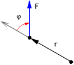

El ángulo que forman dos vectores se determina cuando ambos tienen
el mismo origen. Si no fuera así habría que deslizar uno
de ellos hasta el origen del otro
Lo mismo ocurre para aplicar la regla del sacacorchos

En la figura el vector gris es el vector r
deslizado, entonces el ángulo que for-man r
y F es φ y el sentido de giro de r
a F es como el de las agujas del reloj